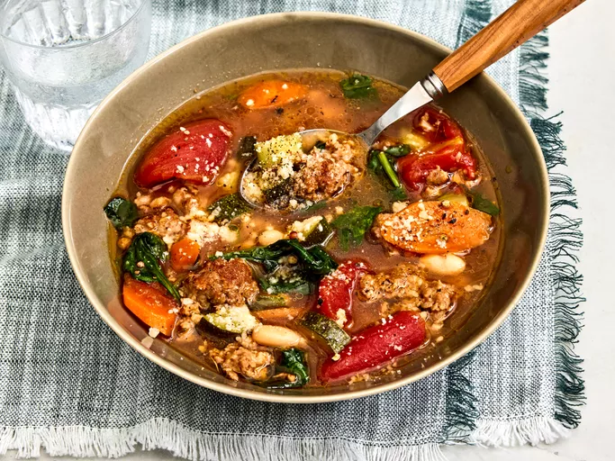

Italian Sausage Soup

Description
This Italian sausage soup is a hearty winter favorite.
Ingredients
- 1 pound Italian sausage
- 1 clove garlic, minced
- 2 (14 ounce) cans beef broth
- 1 (14.5 ounce) can Italian-style stewed tomatoes
- 1 cup sliced carrots
- ¼ teaspoon salt
- ¼ teaspoon ground black pepper
- 1 (14.5 ounce) can great Northern beans, undrained
- 2 small zucchini, cubed
- 2 cups spinach - packed, rinsed and torn
Steps
- Gather all ingredients.
- Heat a stockpot or Dutch oven over medium-high heat. Add sausage and garlic; cook and stir until browned, 5 to 7 minutes.
- Stir in broth, tomatoes, and carrots; season with salt and pepper. Reduce heat to medium-low, cover, and simmer 15 minutes.
- Stir in beans with liquid and zucchini; cover and simmer another 15 minutes, or until zucchini is tender.
- Remove soup from heat and add spinach; replace the lid and allow spinach to wilt.
- Stir until warmed through. Serve and enjoy!